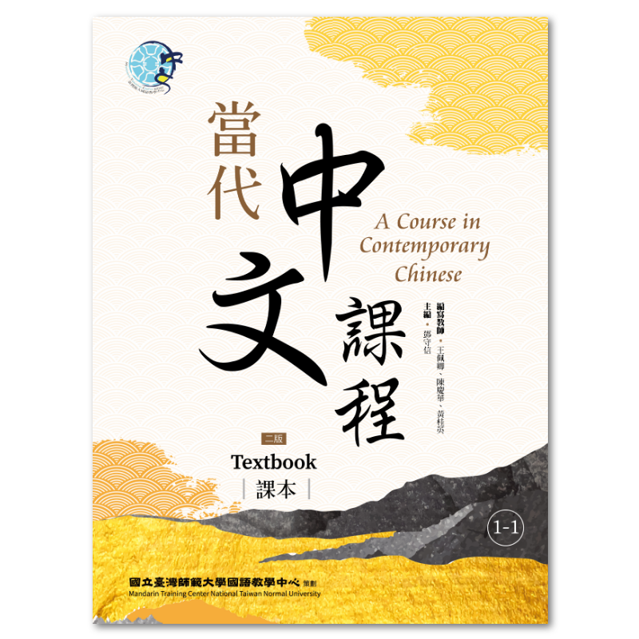

TBCL LLM Wiki 專題簡報｜教材設計實務
Taiwan Benchmarks for the Chinese Language
TBCL 在華語教材設計上的
運用與實務問題
以國家教育研究院《華語文能力基準應用參考指引》（2023）為核心依據，拆解「三等七級」如何轉化為教材編選藍圖，並深入剖析字詞坡度、文化螺旋、技能銜接與跨標準對照四大實務難題與數位解法。
三等七級
基礎 1–3｜進階 4–5｜精熟 6–7
3,100
漢字分級（1–7 級正體字）
14,425
詞語分級（含 73 類詞綴）
496 / 14
語法點（1–5 級）與數位系統

臺灣主流華語教材情境示意：《當代中文課程》二版
官方依據：國家教育研究院《華語文能力基準應用參考指引》（2023 年 10 月，GPN 4711200088）
按 ← / → 鍵換頁｜按 G 檢視總覽｜按 F 全螢幕
官方規範
設計思維
核心定位：從「能力基準」到「教材設計」的橋樑
官方規範（指引 p.36–39）
官方教材編選藍圖：取材三面向 × 編寫六原則
官方精確數據
運用問題一
運用問題一：字詞語法「量級跳躍」與坡度設計難題
18 類主題／67 話題
運用問題二
運用問題二：情境主題、文化螺旋與「急用先學」的拉鋸
課程結構與技能規範
運用問題三
運用問題三：課程大綱選用與多技能銜接（打字、翻譯、語速）
附錄二官方對照圖（2023.08）
運用問題四
運用問題四：跨標準對照並非「一對一」的靜態換算
跨標準標示教材程度的 3 大盲點
- 盲點 1｜把四技能混成單一換算表：以 TBCL 第 2 級為例，聽力與閱讀仍低於 CEFR A1（ACTFL Novice Mid），但口語已達 CEFR A1–A2（ACTFL Intermediate Low）。
- 盲點 2｜忽略零起點前段的細分優勢：在聽、說、讀三圖中，TBCL 1 級（及聽讀 2 級）皆細分於 CEFR A1 之下，對應 TOCFL 準備級，更貼合非漢字圈零起點教材起步。
- 盲點 3｜寫作與口語頂端對照特殊：官方寫作圖未列 TBCL 1 級（自 2 級起對應）；口語圖 6–7 級皆落於 ACTFL Superior 區間（未列 Distinguished）。
TBCL 與 TOCFL 建議報考對照（p.44）與教材定位對策
TBCL 1 級TOCFL 準備級
TBCL 2 級準備級／入門基礎級
TBCL 3 級入門基礎級
TBCL 4–5 級進階高階級
TBCL 6–7 級流利精通級（聽讀皆採 CAT 電腦適性測驗）
對策：面向國際市場之教材，應於教師手冊分技能標註 TBCL / TOCFL / CEFR / ACTFL 對應區間，並註明口語產出與閱讀識字進度差異。

🔍 點擊放大檢視（指引 p.54 閱讀對照圖）
官方資源（coct.naer.edu.tw）
實務工作流分組
官方數位解法：國教院 14 套系統導入教材編撰流程
延伸分析／實務應用框架（非官方條文）
教材設計檢核清單：導入 TBCL 的 5 步實務框架
10 / 10｜結語與出處溯源
KEY TAKEAWAY
TBCL 不是束縛教材創意的僵硬框架，而是讓華語教材做到
「難度有據、任務真實、文化有序、國際可對照」的實證基石。
官方核心來源（Official Source）
國家教育研究院（2023 年 10 月）。《華語文能力基準應用參考指引》（吳欣儒、林慶隆〔通訊作者〕等編著；GPN 4711200088，ISBN 978-626-345-355-5）。
數位整合入口：https://coct.naer.edu.tw/
TOCFL 對照原出處：https://tocfl.edu.tw/（2023.08）
TBCL LLM Wiki 引用頁面與分層聲明
引用頁面：overview、三等七級總覽、第1–7級能力指標、能力指標架構、漢字表概覽、詞語表概覽、語法點概覽、情境主題與溝通話題、教學實施與評量要點、TBCL與TOCFL-CEFR-ACTFL對照。
事實分層聲明：簡報中標示「官方規範／精確數據」者均依 2023 指引原文；標示「實務問題分析／延伸框架」者屬教材設計綜合探討，並與官方條文嚴格區隔。
產出位置：outputs/TBCL教材設計應用與實務問題簡報.html（依 AGENTS.md 衍生品隔離規範）
圖片素材來源：assets/（naerLogo.png、當代中文課程封面、TOCFL 閱讀對照圖）